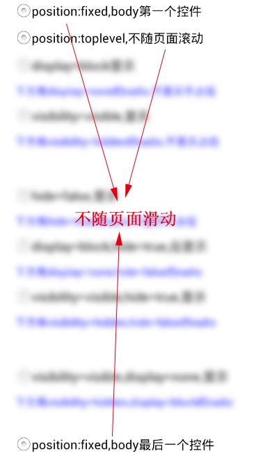
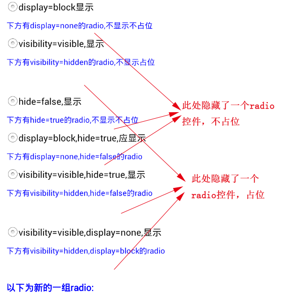
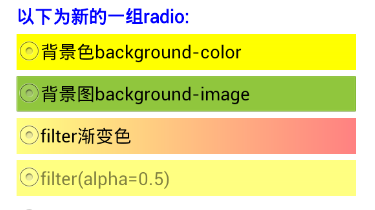
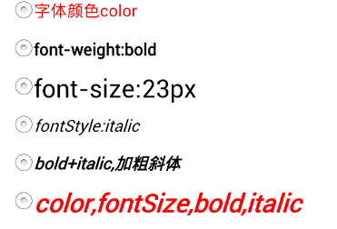
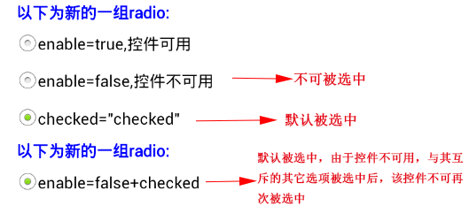
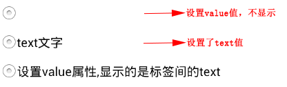
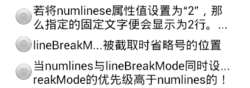

Radio 控件用来表示单选按钮。单选按钮是表示一组互斥选项按钮中的一个。当一个按钮被选中，之前选中的按钮就变为非选中的。它是由input标签加type="radio"属性实现的。
例：<input type="radio">text</input>
name相同的radio控件构成一组，所有未指定name的radio被分为一组。同一组的radio选项之间是互斥的，即该组中只能有一个选项被选中。一个页面中可以有多组radio控件，不同组的选项可以被同时选中。
radio中内容默认垂直居中水平居左，图片与文字部分，垂直方向中心点对齐。根据文字内容自动计算换行。
全局属性以及具体说明参见属性介绍
指定控件选项是否默认选中
@value string checked/true
若未指定checked/true的选项，默认该组中所有选项的初始状态为不被选中。
指定控件是否可用，即是否响应用户事件
@value string true/false
@default true
可点击(enable="true")和不可点击(enable="false")两种状态下的显示样式效果可配置。
指定文字被截取时省略号的位置
@value string head/middle/tail/none
@default none
指定固定文字显示的行数
指定显示在界面上的radio选项的文本。
@value string 任意的字符串
注：这里text属性的值被写在开闭两个标签之间，例：value123，其中"value123"为显示的文本，不能写作text="value123"格式。
指定文本阴影的颜色
注：默认偏移量：(0,-1)。阴影无默认颜色，如果不给颜色则无阴影。
指定文本阴影的偏移量
@default (0,-1)
注：Android平台不支持shadowoffset为一正一负。
指定文本的垂直居中方式
@value string top/middle
@default middle
指定radio控件的value值
@value string 任意的字符串
注：value值不作为显示内容，仅作为上传服务器的参数值。
全局样式以及具体说明参见 * 样式介绍
设置背景色
设置背景图片
设置文本颜色
设置渐变背景色或透明度
设置字体大小
指定文本的字体样式
设置字体是否加粗显示
指定控件高度
@default 根据文字内容计算
指定控件宽度
@default 根据文字内容计算，但宽度不可超出父控件显示范围
针对用户的点击事件，并且控件在可用状态下，触发此事件。
注：radio的点击事件只有在用户切换选择控件时才触发。若用户点击了已被选择的控件，不需要触发点击事件。
代码片段1：css
<style>
.father{left:20px;width:280px;height:30px;font-size:15px;}
.positionFixed{position:fixed;}
.positionToplevel{position:toplevel;top:32px;}
</style>
代码片段2：页面
<body>
<!-- positon:fixed 这是body第一个控件 -->
<input type="radio" name="radio1" class="father,positionFixed">position:fixed,body第一个控件</input>
<!-- positon:toplevel -->
<input type="radio" name="radio1" class="father,positionToplevel">position:toplevel,不随页面滚动</input>
<input type="radio" class="father,positionFixed">position:fixed,body最后一个控件</input>
</body>
效果图：

代码片段1：css
<style>
.father{left:20px;width:280px;height:30px;font-size:15px;}
.display1{display:none;}
.display2{display:block;}
.visibility1{visibility:visible;}
.visibility2{visibility:hidden;}
</style>
代码片段2：页面
<body>
<!-- display -->
<input type="radio" name="radio1" class="father,display2">display=block显示</input>
<label>下方有display=none的radio,不显示不占位</label>
<input type="radio" name="radio1" class="father,display1">display=none不显示不占位</input>
<!-- visibility -->
<input type="radio" name="radio1" class="father,visibility1">visibility=visible,显示</input>
<label>下方有visibility=hidden的radio,不显示占位</label>
<input type="radio" name="radio1" class="father,visibility2">visibility=hidden,不显示占位</input>
<!-- hide -->
<input type="radio" name="radio1" hide="false" class="father">hide=false,显示</input>
<label>下方有hide=true的radio,不显示不占位</label>
<input type="radio" name="radio1" hide="true" class="father">hide=true,不显示不占位</input>
<!-- hide && display -->
<input type="radio" name="radio1" hide="true" class="father,display2">display=block,hide=true,应显示</input>
<label>下方有display=none,hide=false的radio</label>
<input type="radio" name="radio1" hide="false" class="father,display1">display=none,hide=false,不显示不占位</input>
<!-- hide && visibility -->
<input type="radio" name="radio1" class="father,visibility1" hide="true">visibility=visible,hide=true,显示</input>
<label>下方有visibility=hidden,hide=false的radio</label>
<input type="radio" name="radio1" class="father,visibility2" hide="false">visibility=hidden,hide=false,不显示占位</input>
<!-- display && visibility -->
<input type="radio" name="radio1" class="father,display1,visibility1">visibility=visible,display=none,显示</input>
<label>下方有visibility=hidden,display=block的radio</label>
<input type="radio" name="radio1" class="father,display2,visibility2">visibility=hidden,display=block,不显示占位</input>
<label class="label1">以下为新的一组radio:</label>
</body>
效果图：

代码片段1：css
<style>
.father{left:20px;width:280px;height:30px;font-size:15px;}
.background_color{background-color:#FFFF00;}
.background_image{background-image:url(bg_img.png);}
.filter1{filter:progid(startColorStr='#FFFF00',endColorStr='#ff0000',gradientType='1',alpha='0.5');}
.filter2{filter:progid(alpha='0.5'); background-color: #FFFF00;}
</style>
代码片段2：页面
<body>
<label class="label1">以下为新的一组radio:</label>
<!-- background-color -->
<input type="radio" name="radio2" class="father,background_color">背景色background-color</input>
<!-- background-image -->
<input type="radio" name="radio2" class="father,background_image">背景图background-image</input>
<!-- filter -->
<input type="radio" name="radio2" class="father,filter1">filter渐变色</input>
<input type="radio" name="radio2" class="father,filter2">filter(alpha=0.5)</input>
</body>
效果图：

代码片段1：css
<style>
.father{left:20px;width:280px;height:30px;font-size:15px;}
.textColor{color:#ff0000;}
.fontWeight{font-weight:bold;}
.fontSize{font-size:23px;}
.fontStyle{font-style:italic;}
</style>
代码片段2：页面
<body>
<!-- color -->
<input type="radio" name="radio2" class="father,textColor">字体颜色color</input>
<!-- font-weight -->
<input type="radio" name="radio2" class="father,fontWeight">font-weight:bold</input>
<!-- font-size -->
<input type="radio" name="radio2" class="father,fontSize">font-size:23px</input>
<!-- font-style -->
<input type="radio" name="radio2" class="father,fontStyle">fontStyle:italic</input>
<!-- fontStyle fontWeight-->
<input type="radio" name="radio2" class="father,fontWeight,fontStyle">bold+italic,加粗斜体</input>
<!-- textColor fontSize fontStyle fontWeight -->
<input type="radio" name="radio2" class="father,textColor,fontSize,fontWeight,fontStyle">color,fontSize,bold,italic</input>
</body>
效果图：

代码片段1：css
<style>
.label1{font-size:15px;font-weight:bold;}
.father{left:20px;width:280px;height:30px;font-size:15px;}
</style>
代码片段2：页面
<body>
<!-- enable -->
<input type="radio" name="radio2" enable="true" class="father">enable=true,控件可用</input><input type="radio" name="radio2" enable="false" class="father">enable=false,控件不可用</input><!-- checked -->
<input type="radio" name="radio2" class="father" checked="checked">checked="checked"</input><label class="label1">以下为新的一组radio:</label><!-- enable=false checked-->
<input type="radio" class="father" enable="false" checked="checked">enable=false+checked</input>
</body>
效果图：

代码片段1：css
<style>
.father{left:20px;width:280px;height:30px;font-size:15px;}
</style>
代码片段2：页面
<body>
<!-- value text -->
<input type="radio" class="father" value="radio"/><input type="radio" class="father">text文字</input><input type="radio" class="father" value="radio">设置value属性,显示的是标签间的text</input>
</body>
效果图：

代码片段1：css
<style>
.father{left:20px;width:280px;height:30px;font-size:15px;}
.heigthStyle{height: 40px}
</style>
代码片段2：页面
<body>
<!-- numlines -->
<input type="radio" class="father,heigthStyle" numlines="2">若将numlinese属性值设置为“2”，那么指定的固定文字便会显示为2行。如下图所示：</input>
<!-- linebreakmode -->
<input type="radio" class="father" linebreakmode="middle">linebreakmode指定文字被截取时省略号的位置.</input>
<!-- numlines & linebreakmode -->
<input type="radio" class="father,heigthStyle" numlines="2"linebreakmode="middle">当numlines与linebreakmode同时设置时，linebreakmode的优先级高于numlines的！</input>
</body>
效果图：

代码片段1：css
<style>
.father{left:20px;width:280px;height:30px;font-size:15px;}
</style>
代码片段2：页面
<body>
<!-- valign -->
<input type="radio" class="father" valign="top">valign="top"</input>
<input type="radio" class="father">默认valign="middle"</input>
<input type="radio" class="father" valign="bottom">valign="bottom"</input>
</body>
效果图：
代码片段1：css
<style>
.father{left:20px;width:280px;height:30px;font-size:15px;}
</style>
代码片段2：页面
<body>
<!-- shadowcolor & shadowoffset -->
<input type="radio" class="father" shadowcolor="#0000FF">只有shadowcolor时</input>
<input type="radio" class="father" shadowoffset="(5,5)">只有shadowoffset时</input>
<input type="radio" class="father" shadowcolor="#0000FF" shadowoffset="(5,0)">只有横向偏移</input>
<input type="radio" class="father" shadowcolor="#0000FF" shadowoffset="(0,5)">只有纵向偏移</input>
<input type="radio" class="father" shadowcolor="#0000FF" shadowoffset="(3,3)">正向的横向偏移+纵向偏移</input>
<input type="radio" class="father" shadowcolor="#0000FF" shadowoffset="(-3,-3)">反向的横向偏移+纵向偏移</input>
</body>
效果图：
| Date | Note | Modifier |
|---|---|---|
| 2014-10-24 | 初稿 | bi.jiao |
| 2014-12-05 | 根据评审修改示例 | bi.jiao |
| 2014-12-15 | 补充宽高对显示效果的影响 | lin.jitao |
| 2015-04-09 | 添加属性numlines、linebreakmode、valign、shadowcolor、shadowoffset | zhou.changjin |
| 2015-08-17 | 增加新样式的示例代码及效果图 | chai.lixin |
| 2015-09-16 | 增加checked属性支持“true”值的说明，并调整文档结构 | zhou.changjin |
| 2015-12-23 | 补充默认宽高说明 | zhou.changjin |
| 2016-02-15 | 修改onclick事件触发的时机说明 | zhou.changjin |